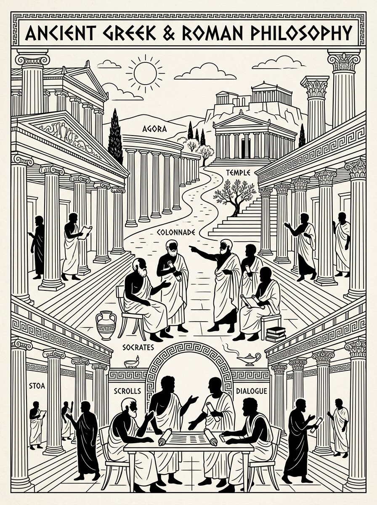

🔍 ZoomWichtige Denker
- Thales: Begründer der Naturphilosophie.
- Heraklit: Alles fließt – Betonung des Wandels.
- Parmenides: Idee des Seienden.
- Sokrates: Kritische Selbstprüfung.
- Platon: Ideenlehre und Dialoge.
- Aristoteles: Systematische Wissenschaft.
- Epikur: Lust als höchstes Gut.
- Zenon (Stoiker): Tugend und Gelassenheit.
Kerngedanken
Die Antike markiert den Übergang vom Mythos zum Logos. Fragen nach Wahrheit, Erkenntnis und dem guten Leben stehen im Zentrum.